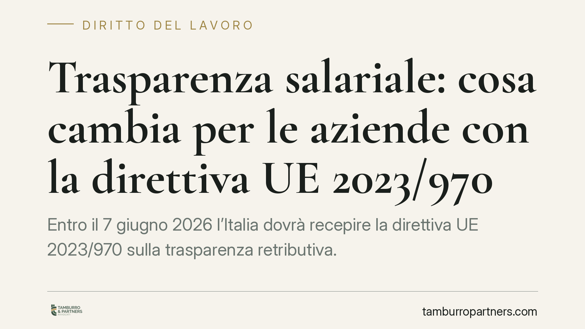

Trasparenza salariale: cosa cambia per le aziende con la direttiva UE 2023/970
Entro il 7 giugno 2026 l'Italia dovrà recepire la direttiva UE 2023/970 sulla trasparenza retributiva. I lavoratori potranno conoscere i livelli medi di retribuzione divisi per sesso e l'onere della prova sulla parità passerà ai datori. Molte imprese, però, non dispongono ancora di dati strutturati sul divario retributivo di genere. Vediamo cosa cambia e come muoversi per tempo.

Il quadro: una scadenza europea, un decreto atteso
La direttiva (UE) 2023/970 impone agli Stati membri di introdurre misure volte a rafforzare il principio di parità retributiva tra donne e uomini attraverso la trasparenza delle retribuzioni. Il termine per il recepimento è fissato al 7 giugno 2026.
Il decreto di recepimento italiano, atteso entro quella data, non risulta allo stato pubblicato con numero e data definitivi. È quindi opportuno distinguere due piani: il termine di recepimento UE (7 giugno 2026) e la data di effettiva efficacia degli obblighi interni, che il legislatore nazionale potrà collocare anche in un momento diverso e, verosimilmente, con applicazione progressiva.
Il contesto normativo preesistente resta il Codice delle pari opportunità (D.lgs. 198/2006), che già disciplina i divieti di discriminazione retributiva e, per le imprese sopra una certa soglia dimensionale, il rapporto periodico sulla situazione del personale. La direttiva irrobustisce questo impianto introducendo obblighi informativi più stringenti e una diversa ripartizione dell'onere probatorio.
Cosa prevede la direttiva
I punti qualificanti sono alcuni e vanno letti con attenzione.
Diritto di informazione individuale. Il lavoratore potrà richiedere informazioni sul proprio livello retributivo e sui livelli medi di retribuzione, suddivisi per sesso, per le categorie di lavoratori che svolgono lo stesso lavoro o un lavoro di pari valore. Il datore deve rispondere entro un termine ragionevole, indicato dalla direttiva in circa due mesi dalla richiesta.
Trasparenza in fase di selezione. Al candidato dovrà essere comunicata la retribuzione iniziale o la relativa fascia prima del colloquio. Specularmente, al datore sarà vietato chiedere lo storico retributivo del candidato: una previsione pensata per spezzare la trasmissione dei divari da un rapporto di lavoro al successivo.
Reportistica per fasce dimensionali. L'obbligo di comunicare informazioni sul divario retributivo di genere si applicherà in modo graduale secondo la dimensione aziendale. La direttiva prevede, in sintesi, obblighi di rendicontazione per i datori con almeno 250 dipendenti (cadenza annuale), con tempistiche e cadenze progressivamente estese alle fasce da 150 e da 100 dipendenti.
Soglia del 5%. Quando la rendicontazione evidenzia un divario retributivo di genere pari o superiore al 5% per una categoria di lavoratori, non giustificato da fattori oggettivi e neutri, scatta l'obbligo di una valutazione retributiva congiunta con i rappresentanti dei lavoratori, finalizzata a individuare e correggere le cause.
L'inversione dell'onere della prova
È il profilo più rilevante sul piano contenzioso. Nelle controversie sulla parità retributiva, spetterà al datore di lavoro dimostrare l'assenza di discriminazione, non più al lavoratore provare di averla subita. In concreto, l'impresa che non abbia tracciato in modo documentato i criteri di determinazione delle retribuzioni si troverà in posizione difensiva debole.
Questa regola amplifica il valore della documentazione interna: politiche retributive, criteri di progressione, sistemi di classificazione e valutazione delle mansioni diventano gli strumenti con cui il datore potrà giustificare le differenze.
Lo stato di preparazione delle imprese
Secondo un sondaggio dell'Associazione italiana per la direzione del personale (Aidp) ripreso dalla stampa di settore, circa la metà delle aziende dichiara di non disporre ancora di dati strutturati sul divario retributivo di genere. Il dato, per quanto non dovrebbe sorprendere a oltre un anno dalla scadenza, segnala un ritardo nella raccolta e nell'analisi delle informazioni necessarie a reggere i nuovi obblighi.
Cosa fare in concreto
- Mappare le retribuzioni per categoria e per sesso. Costruire una base dati che distingua i gruppi di lavoratori che svolgono lo stesso lavoro o lavoro di pari valore, così da calcolare gli eventuali divari.
- Formalizzare i criteri retributivi. Mettere per iscritto i parametri che governano retribuzione iniziale, progressioni e componenti variabili: sono gli elementi che reggeranno la prova in caso di contenzioso.
- Verificare le soglie dimensionali. Individuare in quale fascia (250, 150 o 100 dipendenti) ricade l'impresa e con quale cadenza scatteranno gli obblighi di rendicontazione.
- Rivedere le procedure di selezione. Eliminare dai processi di assunzione la richiesta dello storico retributivo e predisporre la comunicazione della fascia retributiva ai candidati.
- Predisporre una procedura di risposta alle richieste individuali. Definire modalità e tempi per evadere, entro i termini previsti, le domande di informazione dei lavoratori.
La trasparenza salariale non è un adempimento meramente formale: incide sull'organizzazione del personale e sulla gestione del rischio contenzioso. Chi avvia per tempo la raccolta dei dati arriverà alla scadenza in condizione di governare il processo anziché subirlo.
---
*Contributo informativo a cura di Tamburro & Partners - Avv. Giuseppe Tamburro. Non costituisce parere legale.*
Ogni storia di lavoro ha i suoi tempi.
Se gestisci HR e vuoi un confronto su contenzioso, ispezioni o licenziamenti, scrivi allo studio. Ti rispondiamo entro un giorno lavorativo.